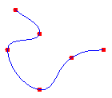
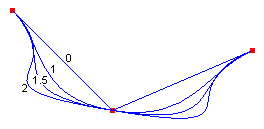

Фундаментальные сплайны в GDI+
Фундаментальный сплайн — это последовательность отдельных кривых, объединенных в одну большую кривую. Сплайн, определяется массив точек и параметром натяжение. Фундаментальный сплайн проходящую через все точки в массиве. Существуют не острые углы и внезапные изменения tightness кривой. Ниже показан набор точек и фундаментальный сплайн, проходящий через все точки в наборе.

Физические и математические сплайны
Физический сплайн — это тонкая часть дерева или прочих материалов, гибкие. До появления математических сплайнов проектировщики использовали физических сплайнов для рисования кривых. Конструктор будет размещать сплайн на листе бумаги и привязать его к определенному набору точек. Конструктор может создать кривую вдоль сплайн пера или карандаша. Заданный набор точек может порождать множество различных кривых, в зависимости от свойств физического сплайна. Например сплайн с высокой Сопротивляться корректировать вызовет отличаться от кривой чрезвычайную гибкость сплайна.
Формулы для математических сплайны основаны на свойства гибкие стержни, поэтому кривых, создаваемые математические сплайны аналогичны кривых, созданных при физической сплайны один раз. Так же, как физические сплайны разных натяжение будет порождать различные кривые данного набора точек, математические сплайны с разными значениями для параметра натяжение создаст различные кривые для данного набора точек. Ниже показан четыре фундаментального сплайна, проходящих через тот же набор точек. Для каждого сплайна отображается натяжение. Напряжение 0 соответствует бесконечный физических натяжение, принудительное кривая кратчайшему (прямые линии) пути между точками. Напряжение 1 соответствует нет физических натяжение, позволяя сплайн путь бы общее изгиба вступили в силу. Напряжение для значений больше 1 кривой ведет себя как сжатый spring, в более длинный маршрут.

Все четыре сплайна на предыдущем рисунке обладают одинаковой касательной в начальной точке. Тангенс является линию от начальной точки к следующей точке кривой. Аналогично общей касательной конечной точки является линии, соединяющей конечной точки в предыдущем точку на кривой.
Чтобы нарисовать фундаментальный сплайн, вам потребуется экземпляр Graphics класс, Penи массив Point объекты Graphics класс предоставляет DrawCurve метод, который строит сплайн, и Pen сохраняет атрибуты сплайна, например толщины и цвета. Массив Point объектов хранит точки, которые будут переданы кривой. В следующем примере кода показано, как нарисовать фундаментальный сплайн, проходящий через точек в myPointArray. Третий параметр — натяжение.
myGraphics.DrawCurve(myPen, myPointArray, 1.5f);
Warning
It looks like the sample you are looking for does not exist.